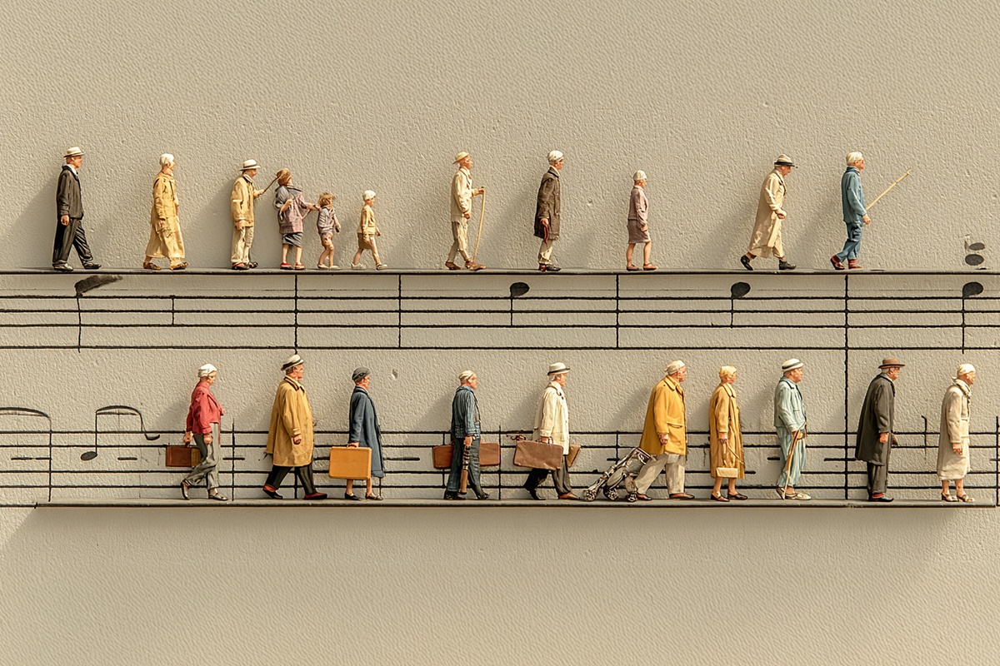
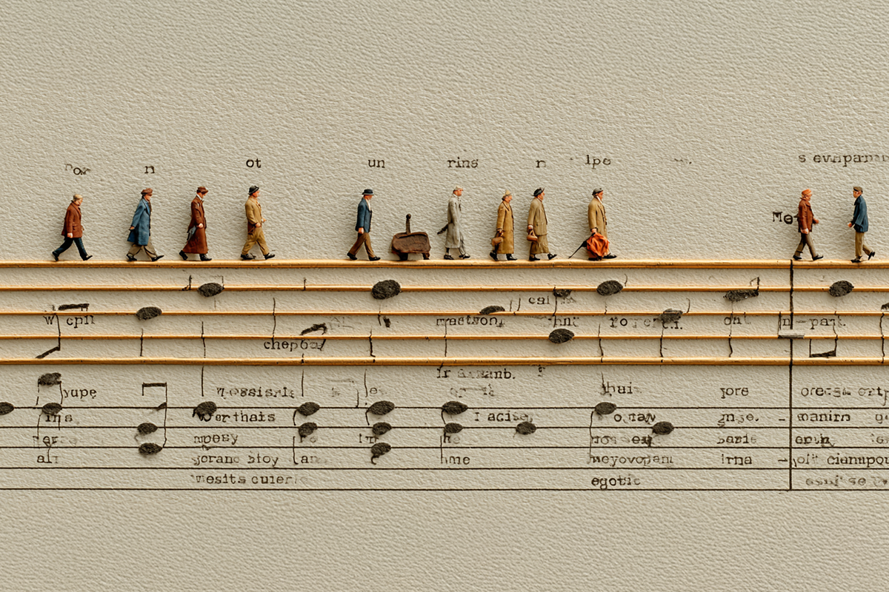

¿Crecimos muy rápido o los jóvenes hablan otro idoma?
El glosario pop que necesitabas.
El glosario pop que necesitabas.
Sabemos que puede ser complicado mantenerte enterado de cada palabra, frase o jerga que se estila entre los más jóvenes en redes sociales, donde todo parece tener sentido hasta que te encuentras de frente con algo que no te cuadra, que no logras comprender y que ni siquiera puedes sacar por lógica.
Pero no te preocupes, que en Compara creamos un glosario especial para que no te sientas tan perdido. Porque no es solo que la vida avanza rápido, sino que está realmente imposible seguirle los pasos a las nuevas definiciones musicales que se vuelven cada vez más populares entre los jóvenes, sobre todo en las comunidades en inglés.

Banger: término visto más en el inglés, pero también se ha comenzado a internar de a poco en el español. Se suele acuñar cuando una canción es buenísima o un éxito. “That song is a huge banger” (“esa canción es un enorme éxito”).
Bias: entramos a los anales del k-pop, y como el k-pop sigue estando en todos lados, lo más probable es que lo hayas leído o escuchado. Bias es un término en inglés que significa tendencia o inclinación, aunque en el contexto en el que se comenta significa “favorito” en un grupo. “¿Quién es tu bias? Mi bias es Seulgi de Red Velvet”, por ejemplo.
El término ultimate bias se asocia al preferido, en términos generales, tu persona favorita en algún género o grupo.
Merch: es el formato corto para referirse a merchandising, ¿qué es merchandising? Se le conoce de esa forma a la venta de productos que están relacionadas con la imagen de un artista o una banda para generar ingresos extra y consolidar su marca entre los fanáticos. Muchas veces esta mercancía original se vende a través de los sitios oficiales de los músicos o pueden comprarse de forma inmediata en sus conciertos.
W o L: Tan simple como Winner o Loser, Ganador o Perdedor. Estas terminologías se pueden encontrar en todo orden de temas en las redes de habla inglesa, no solo a las referentes de música. Si hay un comentario bueno o la publicación tiene un recibimiento positivo por parte de los usuarios, algunos responderán solo con un “W”. Por el contrario, si estos tienen un recibimiento negativo, bastará con comentar “L”, para dejar en claro que no estás de acuerdo con algo.
Gig: es sinónimo de “concierto”. Es un término de origen desconocido, utilizado frecuentemente en los países de habla inglesa en Europa, que comenzó a popularizarse en todas las redes para referirse a las presentaciones en vivo. Este término dataría de los años 20’s y habría comenzado a utilizarse entre los músicos de jazz de la época que se presentaban en conciertos pagados.

Diss: Lo más probable es que ya hayas escuchado esta expresión durante los últimos meses, sobre todo si estuviste pendiente de los “diss tracks” lanzados por los raperos Drake y Kendrick Lamar, un enfrentamiento musical donde se tiraban directas e indirectas en una serie de canciones que servían como una suerte de respuesta ante sus ataques tras el micrófono.
“Diss” es la abreviatura para “disrespect”, o faltar el respeto en español, y es utilizada principalmente en el hip-hop/rap con el propósito principal de atacar verbalmente a otra persona, generalmente otro artista.
Beef: Siguiendo con el contexto pasado, beef es un término utilizado para describir una disputa o rivalidad entre dos o más personas en el ámbito musical, asociado sobre todo en el espacio del hip-hop. “The Most RIDICULOUS Beefs in Music Industry History” (“Las disputas más ridículas en la historia de la industria musical”) es un ejemplo para la utilización de este término. Hay que considerar que beef también se puede usar en otros escenarios de conflicto.
DIY: “Do It Yourself” o “Hágalo Usted Mismo”. Esta expresión se utiliza en varios contextos y escenarios, pero ha tomado mayor popularidad en redes sociales debido a que muchos artistas están trabajando en estas plataformas para hacerse conocidos a través de éstas. Por ello, los grupos y los cantantes crean su propio material, el que después es publicado en sus medios sociales con la finalidad de volverse populares a través de redes como TikTok o Instagram (inicialmente), muchas veces esperando viralizarse para, finalmente, ser descubiertos por la industria.
Groove: es un término ampliamente utilizado por músicos u oyentes que se manejan con la música. Podría definirse como la sensación rítmica que hace que una canción o un ritmo “se sienta bien”, invitando a mover la cabeza o el pie, lo que se genera a través de la interacción precisa entre ritmo, acento y sincronización entre los instrumentos.
¿Estabas familiarizado con algunos de estos conceptos o ya no estás en edad de seguirle los pasos a las jergas de las nuevas generaciones?
 Cultura
CulturaSé que suena raro hablar de calor extremo mientras en Chile todos están buscando la parka más gruesa del clóset.
 Cultura
CulturaEl hecho de que estemos entrando al mes de julio no se puede creer. Pero lo que tampoco se puede creer es la cantidad de artistas que han…
 Cultura
CulturaCuando hablamos de trabajos clásicos de la música chilena, siempre se nombran los discos de Violeta Parra, Víctor Jara, Los Jaivas o…